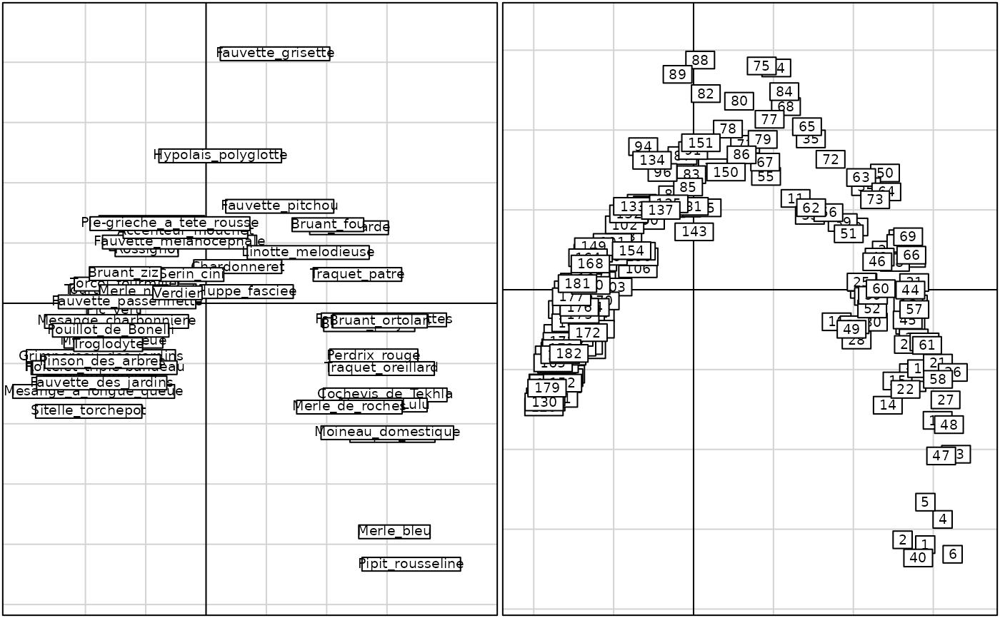
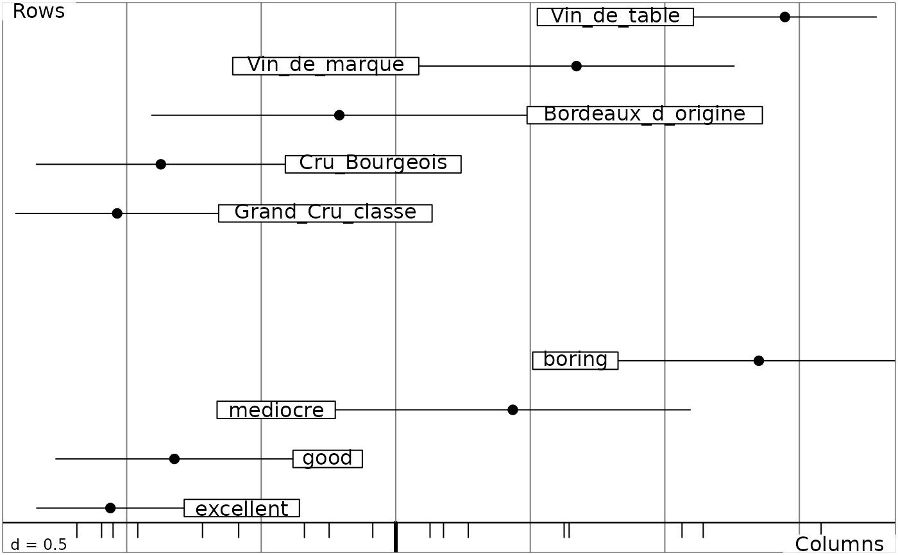

Correspondence Analysis
dudi.coa.Rdperforms a correspondence analysis.
Value
returns a list of class coa and dudi (see dudi) containing
- N
the sum of all the values of the initial table
References
Benzécri, J.P. and Coll. (1973) L'analyse des données. II L'analyse des correspondances, Bordas, Paris. 1–620.
Greenacre, M. J. (1984) Theory and applications of correspondence analysis, Academic Press, London.
Author
Daniel Chessel
Anne-Béatrice Dufour anne-beatrice.dufour@univ-lyon1.fr
Examples
data(rpjdl)
chisq.test(rpjdl$fau)$statistic
#> Warning: Chi-squared approximation may be incorrect
#> X-squared
#> 7323.597
rpjdl.coa <- dudi.coa(rpjdl$fau, scannf = FALSE, nf = 4)
sum(rpjdl.coa$eig)*rpjdl.coa$N # the same
#> [1] 7323.597
if(adegraphicsLoaded()) {
g1 <- s.label(rpjdl.coa$co, plab.cex = 0.6, lab = rpjdl$frlab, plot = FALSE)
g2 <- s.label(rpjdl.coa$li, plab.cex = 0.6, plot = FALSE)
cbindADEg(g1, g2, plot = TRUE)
} else {
par(mfrow = c(1,2))
s.label(rpjdl.coa$co, clab = 0.6, lab = rpjdl$frlab)
s.label(rpjdl.coa$li, clab = 0.6)
par(mfrow = c(1,1))
}

data(bordeaux)
db <- dudi.coa(bordeaux, scan = FALSE)
db
#> Duality diagramm
#> class: coa dudi
#> $call: dudi.coa(df = bordeaux, scannf = FALSE)
#>
#> $nf: 2 axis-components saved
#> $rank: 3
#> eigen values: 0.5906 0.1102 0.03109
#> vector length mode content
#> 1 $cw 4 numeric column weights
#> 2 $lw 5 numeric row weights
#> 3 $eig 3 numeric eigen values
#>
#> data.frame nrow ncol content
#> 1 $tab 5 4 modified array
#> 2 $li 5 2 row coordinates
#> 3 $l1 5 2 row normed scores
#> 4 $co 4 2 column coordinates
#> 5 $c1 4 2 column normed scores
#> other elements: N
score(db)
